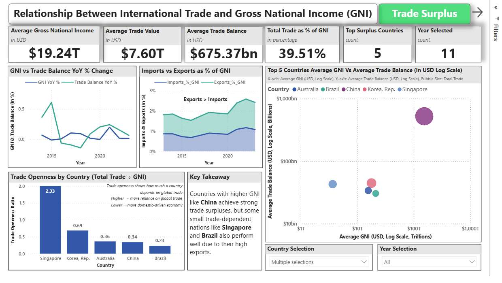

Data preparation · R / Power BI · Academic team project
Making international trade data comparable
How can trade, income, investment and tariff indicators be combined into a dashboard without mixing country identifiers or measurement units?
I mainly cleaned the project data, then reviewed and revised the completed dashboard pages. Dashboard design, clustering and the broader analysis were shared team outputs.
The difficult part was comparability
The workflow combined trade data with GNI, FDI and tariff indicators. Sources used different country-code fields and units. The portfolio code treats trade values as USD millions and converts GNI and FDI from USD to USD millions; these unit assumptions have not been independently reconciled to the original extracts.
Preparation therefore involved aligning country identifiers, combining trade indicators before reshaping, joining economic indicators and checking the resulting country coverage. The aggregation uses summation, which is appropriate only if the source rows are additive; their original grain still needs checking. Manual country-code and regional tariff mappings in the original workflow require explicit documentation rather than being treated as automatic matches.
A real dashboard output

Static screenshot extracted from the team’s submitted presentation. Click to view at full size. This is a team dashboard output, not a live embedded Power BI report. The displayed selection covers five countries and 2013–2023; it differs from the separate 2023 preparation export.
My review focused on making completed pages clearer and ensuring comparisons used consistent data definitions. The visual should be read as descriptive: it does not establish that a tariff change causes a change in trade or income.
Make the data-preparation logic inspectable
The team’s 2023 prepared export contains 164 economies. The excerpt below illustrates the join and unit-conversion steps. For this portfolio, it replaces local machine paths with function inputs, adds duplicate-key safeguards and retains missing values.
# Portfolio adaptation of the team's R preparation workflow.
# Inputs: trade(country_code, indicator, value),
# gni(CountryCode, value), fdi(CountryCode, value), all filtered to 2023.
# Assumed units: trade in USD millions; GNI / FDI in USD.
# Added safeguards: duplicate-key checks and retained missing values.
library(dplyr)
library(tidyr)
prepare_indicators <- function(trade, gni, fdi) {
stopifnot(!anyDuplicated(gni$CountryCode),
!anyDuplicated(fdi$CountryCode))
# Summation assumes additive trade rows; verify source grain.
trade_wide <- trade |>
group_by(country_code, indicator) |>
summarise(value = sum(value), .groups = "drop") |>
pivot_wider(names_from = indicator, values_from = value)
trade_wide |>
left_join(gni |> transmute(CountryCode, gni_million = value / 1e6),
by = c("country_code" = "CountryCode")) |>
left_join(fdi |> transmute(CountryCode, fdi_million = value / 1e6),
by = c("country_code" = "CountryCode"))
}
What still needs checking?
The submitted workflow replaced some missing economic indicators with zero. Missing and zero mean different things, so those transformations should be reviewed before relying on comparisons or clustering. The portfolio adaptation preserves missingness; it is not claimed to regenerate the submitted dashboard.
Further checks should verify source units and trade-row grain, then reconcile unmatched country codes, duplicate join keys, manual tariff mappings and dashboard totals against source extracts. The R adaptation has been reviewed but not executed here; there is no claimed before-and-after error reduction.